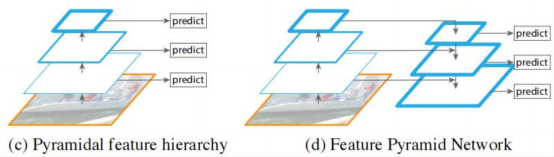
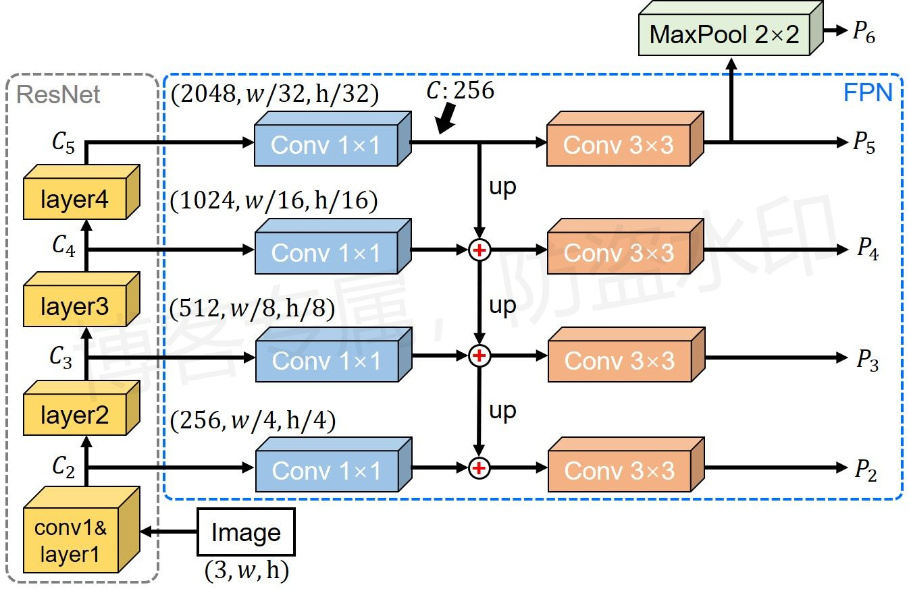

特征金字塔——Feature Pyramid Networks¶
综述¶
会议时间：IEEE Conference on Computer Vision and Pattern Recognition 2017 (CVPR, 2017)
论文地址：https://openaccess.thecvf.com/content_ICCV_2017/papers/Lin_Focal_Loss_for_ICCV_2017_paper.pdf
针对领域：目标检测
主要思想¶
深层特征具有分辨率低，特征水平高（high-level）的特点，即特征图尺寸小，每个特征数据包含丰富的语义信息、具有较大的感受野、并且对应原图较大的区域；浅层特征具有分辨率高，特征水平低（low-level）的特点，即特征图尺寸大，每个特征数据包含少量的语义信息、具有较小的感受野、并且对应原图较小的区域。目标检测网络在检测目标时是基于特征图上每个特征数据来检测的，深层的特征数据由于感受野较大，因此适用于检测大物体，但同时由于感受野大，对应原图较大的区域，面对一个小物体，容易被同一区域内其他的物体所干扰，因此不适用于检测小物体；浅层特征虽然感受野小，对应原图小区域，可以对应小物体，但是浅层特征所容纳的语义信息少，难以描述原始图像的物体特征，直接利用浅层特征做预测的话，难以检测物体。传统的目标检测算法大多抛弃了浅层特征，只利用最后一层特征（即最深的特征）做预测，因此往往难以预测小物体，网络鲁棒性较低。
为了同时检测网络中的大物体和小物体，SSD算法同时利用不同层的特征做预测，如下图（c）所示：

同时提取VGG网络后几个阶段的特征图参与预测，一定程度上缓解了多尺度物体检测所带来的问题，但是不同特征层之间相互独立，较浅的特征还是具有语义信息少的缺点，相对于深层特征，还是难以描述物体，没有从根源上解决问题。
想要提高浅层特征的语义信息量，最简单的方法就是做特征融合，融合深层特征与浅层特征（如上图d），使得高分辨率的浅层特征也有高水平语义信息的特点，从而使其更好地参与物体预测，这就是FPN算法的核心所在。（对应论文：creating a feature pyramid that has strong semantics at all scales.）
方法¶
网络结构图如下所示：

注：图片原创，使用请告知
首先将原图传入特征提取网络中，这里以ResNet为例，将layer1层到layer4层之后的特征依次命名为\{C_2、C_3、C_4、C_5\}，总共得到四组特征。最简单的特征融合方法就是做加法运算，如：U-Net，但这里不同层之间特征图通道数以及特征图宽高尺寸均不同，因此不能直接融合，需要做额外的处理。
将四组特征分别传入卷积核尺寸为1\times1的卷积层中压缩通道，通道维数压缩成256，统一通道数便于后续的融合。首先从C_5开始，先对较深的特征做上采样运算（这里直接利用”nearest”插值运算即可，具体见源码），宽高变为原来的两倍，之后再与通道压缩后的较浅特征做加法运算，最后将结果传入卷积核尺寸为3\times3的卷积层，做特征融合，得到最终用于预测的特征。经过上述特征融合步骤会得到\{P_2、P_3、P_4\}，之后再对顶层特征（即最深层特征）C_5单独处理，直接将其传入卷积核尺寸为3\times3的卷积层，得到预测特征P_5。对于感受野更大的P_6，有多种计算方法，这里直接将P_5做下采样处理。
注：
- 特征图分辨率越高，锚点越多，锚点在原图上的分布越密，对应计算量就会越大，因此利用浅层特征做预测会带来计算量较大的问题，如果想要减轻计算量，则可以舍去一部分特征层，如本文作者舍去了特征图C_1，RetinaNet舍去了特征图C_2；（FPN网络结构只是提升了浅层特征的语义信息，浅层特征的特征数据很多，因此参与预测时会不可避免地引入过量的计算，两个问题不要弄混）
- 作者在Faster R-CNN上做的实验，在RPN中，每个预测特征只设置一个锚点尺度，\{P_2、P_3、P_4、P_5、P_6\}分别对应\{32^2、64^2、128^2、256^2\}，每个锚点尺度对应三组比例\{1:2、1:1、2:1\}，其中P_6只参与RPN模块，预测前景边界，不参与后期的分类预测；
- 相加后的特征有两个方向，一个是传入卷积核尺寸为3\times3的卷积层，得到当前层的预测特征P_i，另一个是继续上采样，参与下一次的特征融合，因此加法特征（相加后的特征）是由上到下一脉相传的，最底层也会受到顶层特征的影响，即最浅层的特征也具有最高的语义信息；
以上仅是笔者个人见解，若有错误，欢迎指正。
代码实现¶
参考链接：
- https://github.com/WZMIAOMIAO/deep-learning-for-image-processing
- https://github.com/pytorch/vision/tree/master/torchvision/models/detection
输入：多个特征层上的卷积特征；输出：融合后的特征，输出的特征通道数一样，默认256。
class FeaturePyramidNetwork(nn.Module):
"""
Module that adds a FPN from on top of a set of feature maps. This is based on
`"Feature Pyramid Network for Object Detection" <https://arxiv.org/abs/1612.03144>`_.
The feature maps are currently supposed to be in increasing depth
order.
The input to the model is expected to be an OrderedDict[Tensor], containing
the feature maps on top of which the FPN will be added.
Arguments:
in_channels_list (list[int]): number of channels for each feature map that
is passed to the module
out_channels (int): number of channels of the FPN representation
extra_blocks (ExtraFPNBlock or None): if provided, extra operations will
be performed. It is expected to take the fpn features, the original
features and the names of the original features as input, and returns
a new list of feature maps and their corresponding names
"""
def __init__(self, in_channels_list, out_channels, extra_blocks=None):
super(FeaturePyramidNetwork, self).__init__()
# 用来调整resnet特征矩阵(layer1,2,3,4)的channel（kernel_size=1）
# 这里输入通道数因特征层而异，输出通道数一致，默认256
self.inner_blocks = nn.ModuleList()
# 对调整后的特征矩阵使用3x3的卷积核来得到对应的预测特征矩阵
self.layer_blocks = nn.ModuleList()
# 遍历所有的特征层
for in_channels in in_channels_list:
if in_channels == 0:
continue
# 定义卷积核为1的卷积，用于压缩特征
inner_block_module = nn.Conv2d(in_channels, out_channels, 1)
# 定义卷积核为3的卷积，用于得到预测特征矩阵
layer_block_module = nn.Conv2d(out_channels, out_channels, 3, padding=1)
self.inner_blocks.append(inner_block_module)
self.layer_blocks.append(layer_block_module)
# initialize parameters now to avoid modifying the initialization of top_blocks
# 初始化模型参数
for m in self.children():
if isinstance(m, nn.Conv2d):
nn.init.kaiming_uniform_(m.weight, a=1)
nn.init.constant_(m.bias, 0)
# Faster R-CNN中默认设置额外的池化模块，将顶层特征做一步池化，生成P6
self.extra_blocks = extra_blocks
def forward(self, x):
# type: (Dict[str, Tensor]) -> Dict[str, Tensor]
"""
Computes the FPN for a set of feature maps.
Arguments:
x (OrderedDict[Tensor]): 每个特征层上的特征图
Returns:
results (OrderedDict[Tensor]): feature maps after FPN layers.
They are ordered from highest resolution first.
"""
# unpack OrderedDict into two lists for easier handling
names = list(x.keys())
x = list(x.values())
# 将resnet layer4的channel调整到指定的out_channels
# last_inner = self.inner_blocks[-1](x[-1])
# 首先将顶层特征传入卷积核为1*1的卷积中压缩特征，压缩后last_inner尺寸为(b,256,w,h)
last_inner = self.get_result_from_inner_blocks(x[-1], -1)
# result中保存着每个预测特征层
results = []
# 将layer4调整channel后的特征矩阵，通过3x3卷积后得到对应的预测特征矩阵
results.append(self.get_result_from_layer_blocks(last_inner, -1))
# 依次从顶层向低层遍历，这里的顶层指深层特征，低层指浅层特征
for idx in range(len(x) - 2, -1, -1):
# 首先压缩深层特征的通道数，压缩成256*256
inner_lateral = self.get_result_from_inner_blocks(x[idx], idx)
# 得到浅层特征的尺寸，之后对深层特征执行上采样操作
feat_shape = inner_lateral.shape[-2:]
# 对应论文“nearest”插值
inner_top_down = F.interpolate(last_inner, size=feat_shape, mode="nearest")
# 浅层特征与深层特征做加法运算，融合和特征
last_inner = inner_lateral + inner_top_down
# 将融合后的特征传入3*3的卷积层中，得到最后的预测特征
results.insert(0, self.get_result_from_layer_blocks(last_inner, idx))
# 在layer4对应的预测特征层基础上生成预测特征矩阵5，即对顶层特征做池化处理，生成论文中的P6
if self.extra_blocks is not None:
results, names = self.extra_blocks(results, x, names)
# make it back an OrderedDict
out = OrderedDict([(k, v) for k, v in zip(names, results)])
return out
其它函数
压缩通道数
def get_result_from_inner_blocks(self, x, idx):
# type: (Tensor, int) -> Tensor
"""
将高层的特征传入1*1的卷积中，压缩通道数
"""
num_blocks = len(self.inner_blocks)
if idx < 0:
idx += num_blocks
i = 0
out = x
for module in self.inner_blocks:
if i == idx:
out = module(x)
i += 1
return out
得到最终的预测特征
`def get_result_from_layer_blocks(self, x, idx):
# type: (Tensor, int) -> Tensor
"""
将融合后的特征传入3*3的卷积，得到最终的预测特征
"""
num_blocks = len(self.layer_blocks)
if idx < 0:
idx += num_blocks
i = 0
out = x
for module in self.layer_blocks:
if i == idx:
out = module(x)
i += 1
return out
初步完稿于2023年1月12日